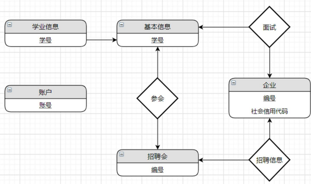

基于GaussDB的招聘与就业信息管理系统
基于云数据库 GaussDB(for MySQL)实现，使用华为云账号进行操作。
系统描述
大学毕业生要就业，企业要吸收新鲜血液，学校作为两者之间的桥梁，需要进行信息的集成和管理，便于对毕业生就业与企业招聘信息进行管理和调研。
本系统主要面对三种用户，学校管理机构、毕业生、企业。
管理机构人员可以对本校毕业生、面向本校的招聘会和参会企业的基本信息进行查询和修改，同时对毕业生参会、面试、聘用情况进行查询， 最后获得企业用人倾向和毕业生择业倾向的统计分析结果。
毕业生可以对个人信息修改，对企业和招聘会的信息进行查询。
企业可以对本企业信息和招聘会投递岗位信息进行修改和查询。
本系统集成了学校、毕业生、企业三方信息，便于学生了解和参与本校与企业合作提供的招聘会，同时方便学校做信息调研。
应用程序功能
(1) 对所有用户开放：
招聘会基本信息的查询
招聘会参会企业的查询
(2) 对学生开放：
自己基本信息的编辑
自己学业信息的编辑
报名招聘会
(3) 对企业开放：
本企业信息的编辑
毕业生的面试和聘用情况的录入
(4) 对学校开放：
招聘与就业信息的查询、统计和分析
系统 $\rm{E-R}$ 图

关系模式设计
根据概念结构设计得到的 E-R 图和转换规则，得到如下关系模式（主键用下 划线标出，外键予以说明）：
- 基本信息：学号、姓名、籍贯、出生日期、性别、身份证号、政治面貌、 民族、婚姻状况、户口所在地、联系电话、电子邮箱。
- 学业信息：学号、学院、专业、最高学历、均绩、英语水平、计算机水平、普通话水平、实习经历、竞赛经历、项目经历。学号外键参考基本信息。
- 招聘会：编号、名称、日期、地址。
- 企业：编号、名称、类型、社会信用代码、城市、邮政代码、联系地址。
- 参会：学号、招聘会编号。学号外键参考基本信息，招聘会编号外键参考招聘会。
- 招聘信息包括：招聘会编号、企业编号、岗位、人数、薪资。 招聘会编号外键参考招聘会，企业编号外键参考企业。
- 面试： 学号、企业编号、岗位、聘用、薪资。学号外键参考基本信息， 企业编号外键参考企业。
- 账户：账号、密码、权限。
演示视频
代码地址：
10185102110/Recruitment-and-employment-information-management-system (github.com)
本博客所有文章除特别声明外，均采用 CC BY-NC-SA 4.0 许可协议。转载请注明来自 浮生孰来！